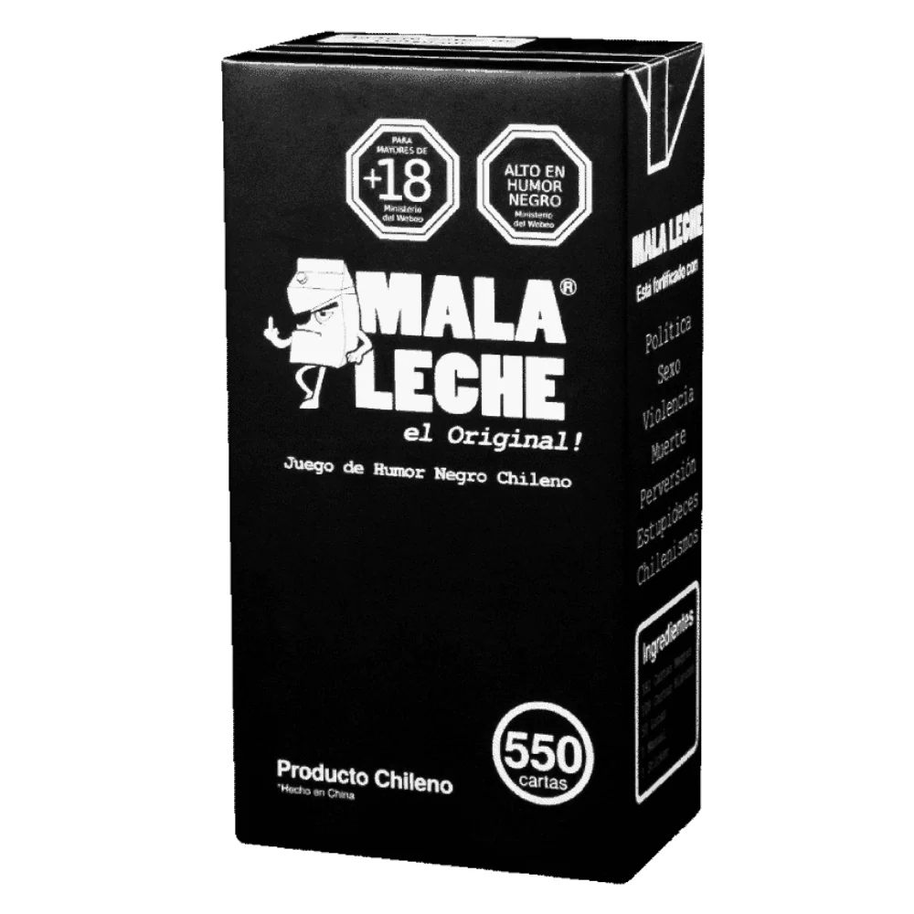
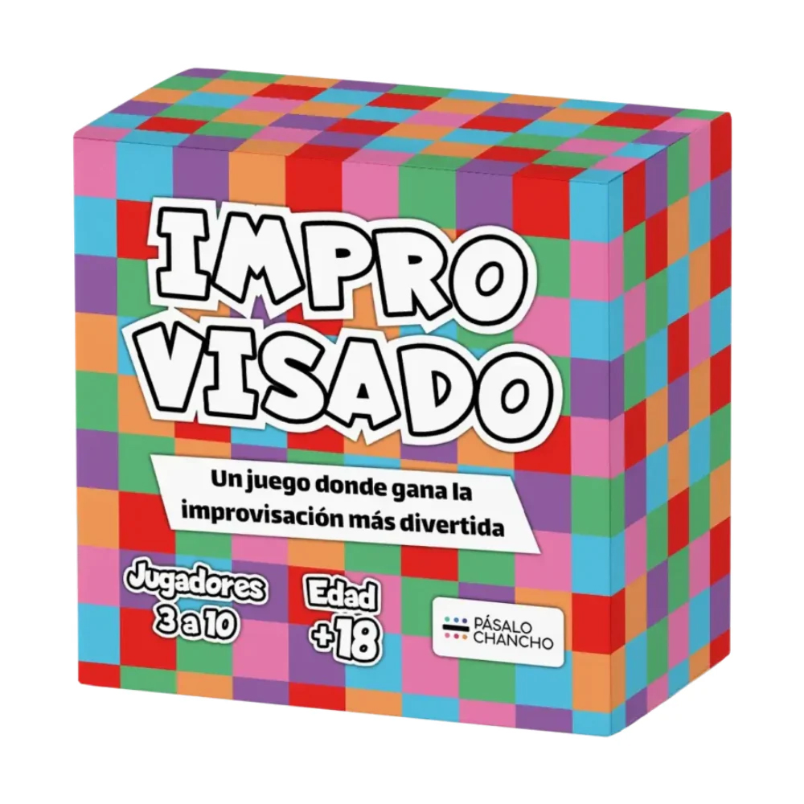
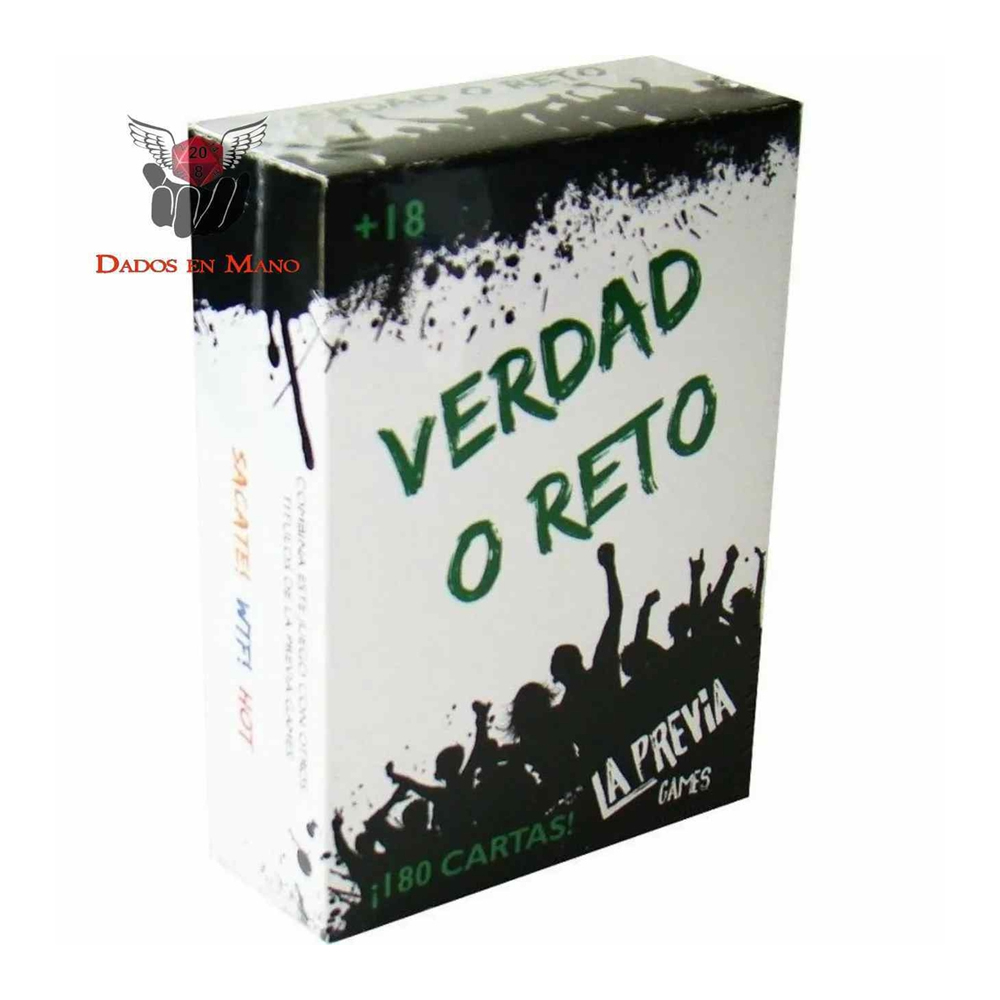

Mala Leche
Combina los pensamientos más horribles e inmorales de nuestra enferma sociedad chilena para lograr las frases más absurdas que logran sorprender al Dealer (sea por graciosa, por absurda, por brígida, por tabú, por cercana o lo que sea).
Valor anterior: $24.990
Valor: $19.990

La Palta nerviosa
Haremos que te explote la cabeza ?? La Palta Nerviosa, es un juego cuyo objetivo es quedarte sin cartas, si eres el primer en terminar una ronda sin cartas ganas la partida. Pero en el camino debes ir lanzando tus cartas contando del 1 al 12, y esquivando los ají que pueden saltar a tu boca y hacerte perder.
Valor: $9.990

Improvisado
Improvisado es un alocado juego en el cual dos participantes se enfrentan en un duelo de actuación e improvisación frente a sus amigos. El director de turno toma una carta de ACCIÓN, por ejemplo: “Pide matrimonio” y elige a 2 jugadores, cada uno de los cuales toma una carta de CONDICIÓN, por ejemplo: “Pero eres un gorila” o “Pero no tienes brazos ni piernas”.
Valor: $12.990

Verdad o Reto
Este juego clásico de preguntas y retos es perfecto para fiestas de adultos. Los participantes pueden elegir entre responder una pregunta honestamente o realizar un reto, lo que puede generar momentos divertidos y memorables.
Valor: $14.990